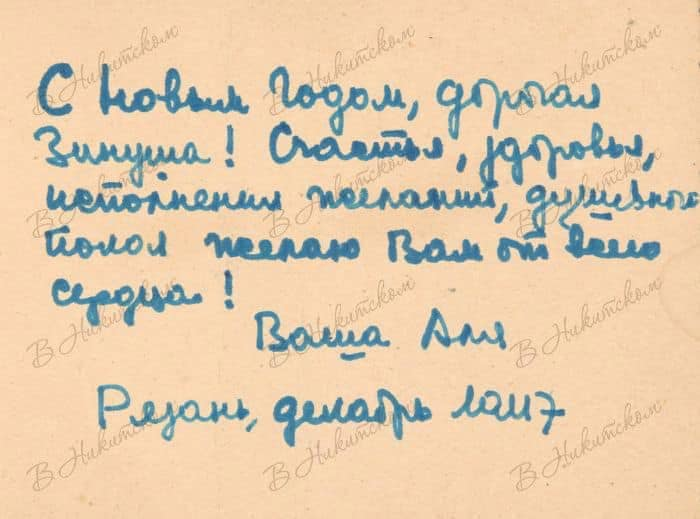
Эти новогодние открытки нарисовала Ариадна Эфрон, дочь Марины Цветаевой. Она рассылала их родным и знакомым из лагеря и ссылки. Таких самодельных открыток сохранилось довольно много. Сама Ариадна Сергеевна называла их хворыми и плохонькими.
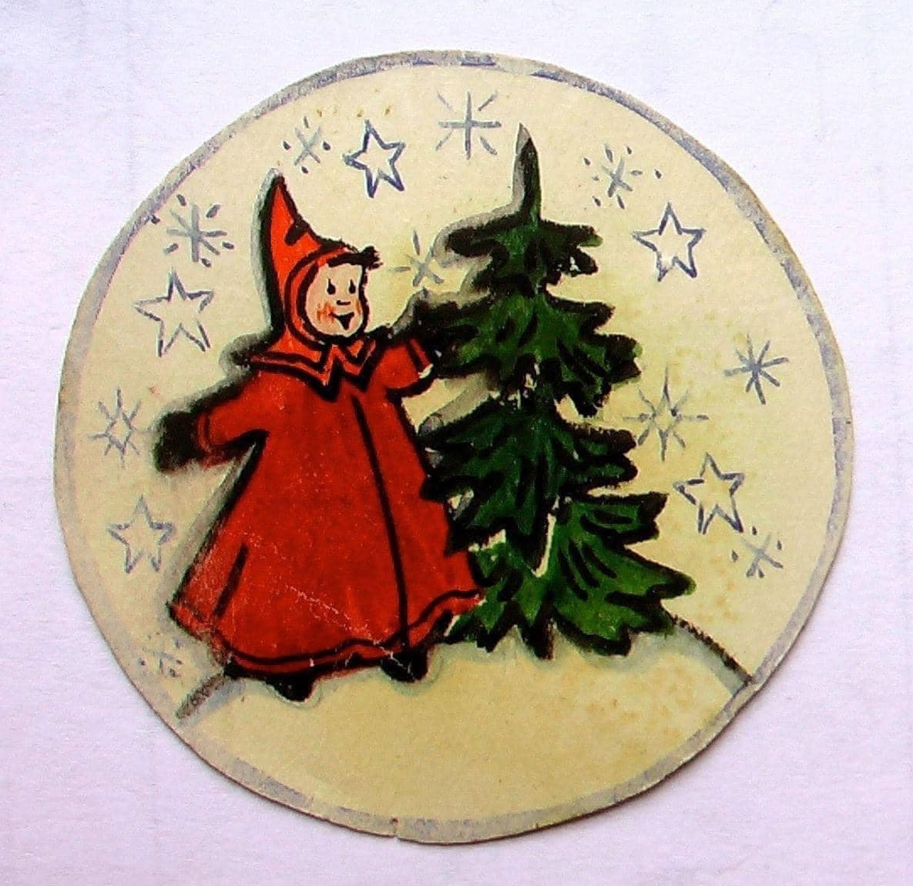
«Очень я люблю елку, всю жизнь, - писала в своих воспоминаниях Ариадна Эфрон. - И всю жизнь, за исключением полнейшей невозможности по техническим причинам, устраивала ее где бы и как бы ни жила».
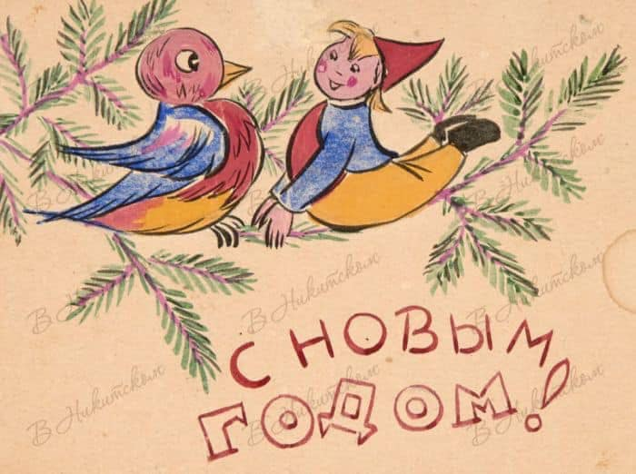
Вот такое впечатление произвела на нее самая первая рождественская елка, которую увидела маленькая Аля в
детстве:
«Помню себя, восторженную, восхищенную. Не знаю, куда смотреть, — сжимаю в объятьях куклу с меня ростом,
боярышню в щедро вышитом и осыпанном всевозможными лентами костюме, смотрю на елку, такую огромную, что
приходится голову закидывать так, что моя боярышня стукается кокошником об пол.
Папа улыбается на мое разрыванье между подарками и елкой. Мама в коричневом шелковом платье, старинном,
с обтянутой талией, и пышной юбкой.
Внимание мое обращают великолепные львы, тигры и верблюды, которые висят на елке.
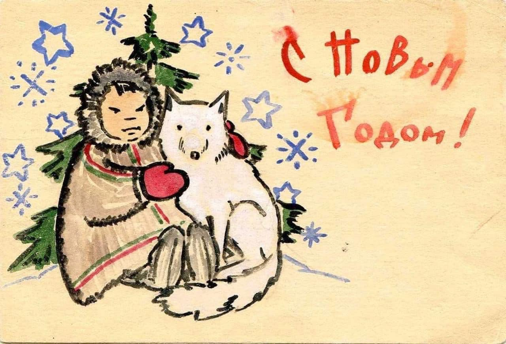
Шары, бусы, цепи, бахромки, и свечи, свечи, свечи! Блеск, сиянье. В последствии я вспомнила эту елку как из книги «Щелкунчик», такая она была волшебная. А какой чудный запах горящих веточек, подожженых свечками! Я помню, что елка мне так нравилась, что мне хотелось в ней сгореть, но дотронуться даже до догоревшей свечки я боялась».
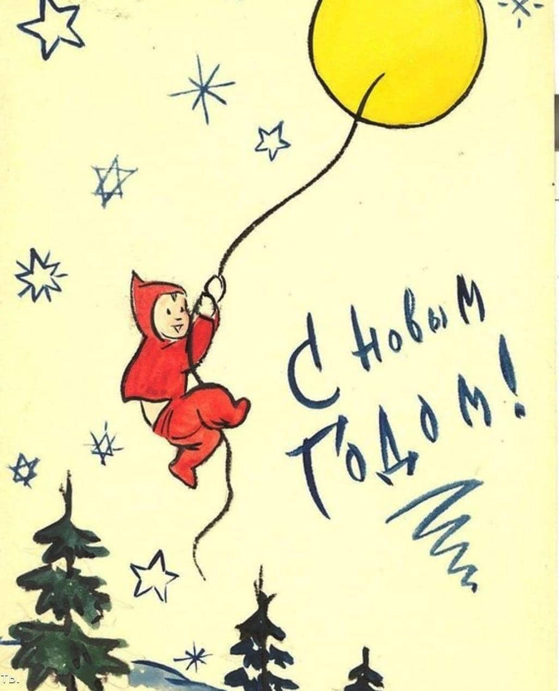
И вы можете рисовать и печатать в типографии Лазурь свои эксклюзивные открытки для своих родных и друзей !!!
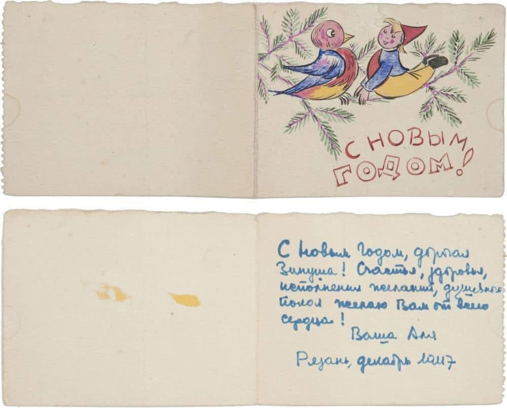
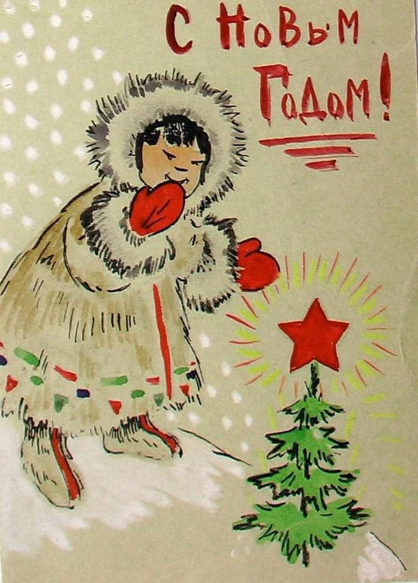
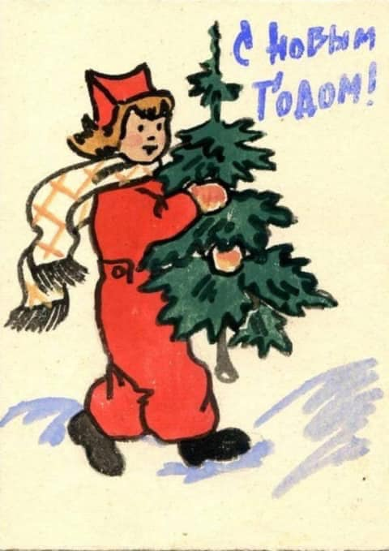
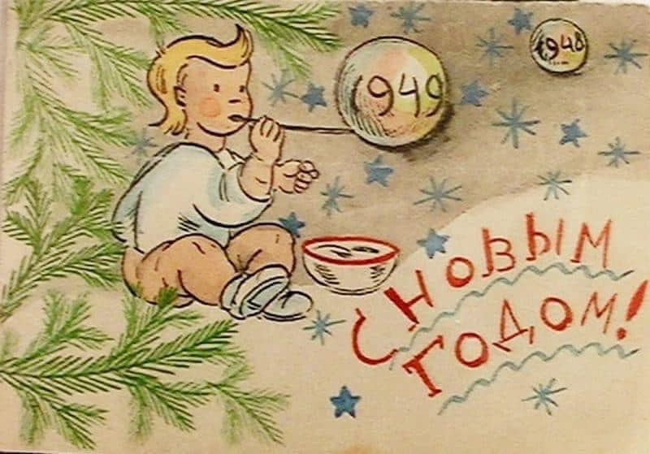
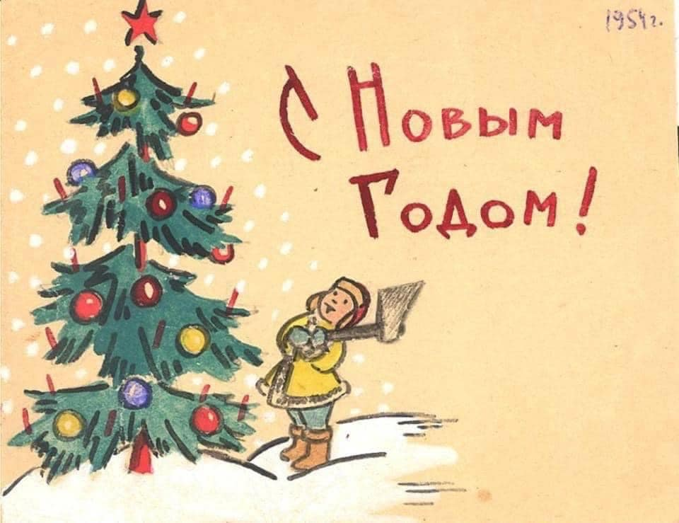
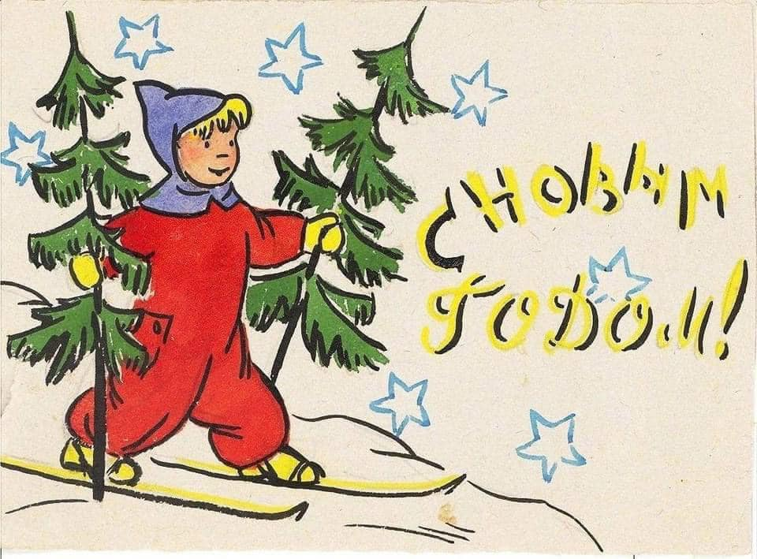